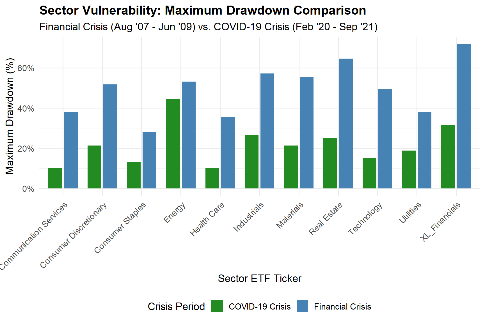
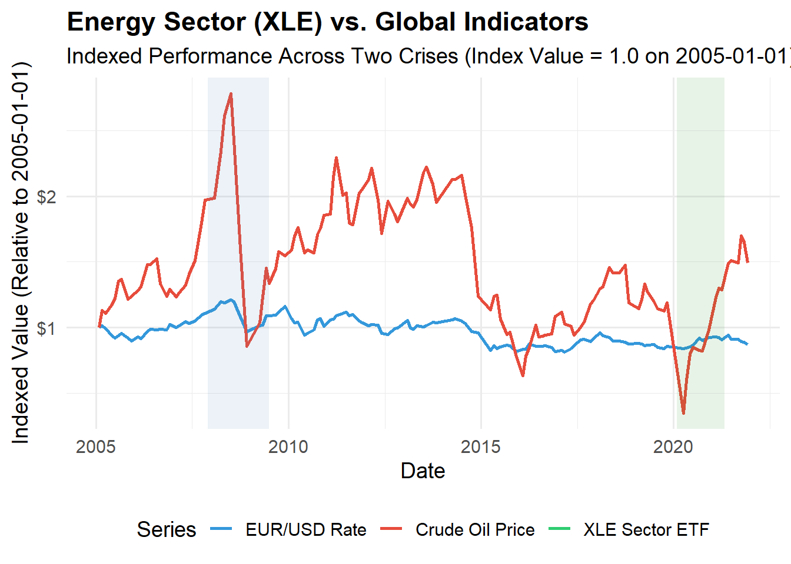
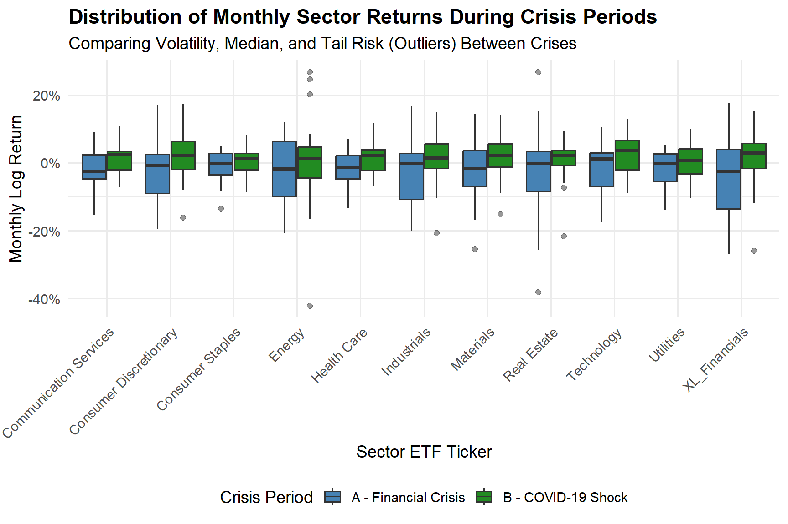
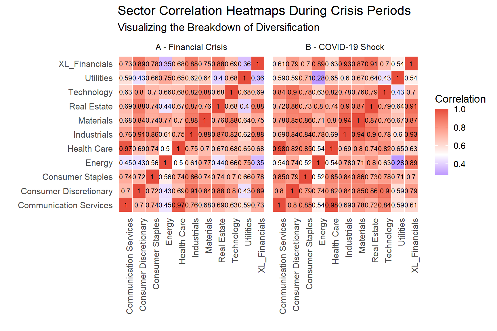

Sector & Economic Insights: Financial Crisis vs COVID Crisis
Data Import
Introduction
This project examines how U.S. equity sectors and key macroeconomic indicators behaved during two major market disruptions: the Global Financial Crisis (2007–2009) and the COVID-19 shock (2020).
Using sector-level returns, drawdowns, volatility, and cross-sector correlations, the analysis highlights fundamental differences in the severity, duration, and synchronization of market stress across the two episodes. In addition, macroeconomic indicators such as unemployment, monetary policy, inflation, and consumer sentiment provide critical context for understanding these market dynamics.
Together, the results illustrate how a prolonged, systemic financial collapse contrasts with a sudden, policy-driven economic shock, offering insight into risk management and diversification under extreme conditions.
Sector Performance Analysis
Maximum Drawdown Comparison
This chart highlights a clear difference in the severity and breadth of losses across sectors during the two crises. The Financial Crisis (blue bars) produced consistently deeper maximum drawdowns across every sector, with many experiencing losses in the 40–70% range, underscoring the systemic and prolonged nature of the shock. Sectors such as Financials, Real Estate, Materials, and Industrials were especially hard hit, reflecting the crisis’s roots in the financial system and its spillover into the real economy.
In contrast, the COVID-19 Crisis (green bars) resulted in shallower maximum drawdowns overall, generally between 10–45%, and showed greater dispersion across sectors. Defensive sectors like Communication Services and Health Care were relatively resilient, while cyclicals such as Energy and Consumer Discretionary saw larger declines. Together, the comparison illustrates that while COVID-19 triggered a sharp and sudden sell-off, the Global Financial Crisis imposed deeper, more uniform damage across the market, revealing far greater systemic vulnerability.
Risk-Return Profile
This scatter plot highlights a clear shift in sector risk–return dynamics between the two crises. During the Financial Crisis (blue triangles), nearly all sectors lie in the negative-return region, with elevated volatility and especially severe outcomes for Financials and Real Estate. This clustering reflects the prolonged, systemic nature of the GFC, where higher risk was consistently paired with worse returns.
In contrast, the COVID-19 Crisis (green circles) shows an upward shift in returns and greater cross-sector dispersion. Most sectors achieved positive mean monthly returns despite moderate volatility, indicating a rapid recovery. Technology and Communication Services exhibit strong returns with relatively lower risk, while Energy stands out as a high-volatility outlier. Overall, the chart underscores the persistent damage of the GFC versus the short-lived but volatile shock of COVID-19.

Macroeconomic Context
These sector-level dynamics unfolded against starkly different macroeconomic backdrops. The following charts examine key economic indicators that shaped market conditions during each crisis period.
Labor Markets and Monetary Policy
This chart contrasts labor market dynamics and monetary policy across the two crises. During the Financial Crisis (gray shading), the labor market deteriorates gradually: the unemployment rate rises steadily to above 10%, while payroll growth declines into negative territory and remains weak for several years. This slow erosion reflects the prolonged fallout from the housing and credit collapse.
In contrast, the COVID-19 shock (green shading) is marked by an abrupt, unprecedented break. Unemployment spikes almost instantly to over 14%, and payroll growth collapses to nearly −15% in a single month, capturing the sudden halt caused by lockdowns. The Fed Funds Rate highlights the policy difference: rates were cut progressively during the GFC, whereas they were already near zero before COVID, forcing an immediate emergency response to stabilize the economy.
Consumer Sentiment and Inflation Dynamics
This chart compares consumer sentiment and inflation across the two crisis periods. The Consumer Sentiment Index (green line) declines sharply in both episodes, but the pattern differs: during the Financial Crisis (gray shading), sentiment falls deeply and recovers only gradually over several years, while during the COVID-19 shock (green shading), sentiment drops abruptly from elevated levels, reflecting the sudden uncertainty triggered by the pandemic. In both cases, consumer confidence deteriorates significantly, though the COVID decline is more immediate.
The key distinction emerges in CPI inflation (blue line). During the Financial Crisis, inflation trends downward and briefly turns negative, signaling deflationary pressure from collapsing demand. In contrast, during and after the COVID-19 shock, inflation remains positive and subsequently accelerates, driven by supply disruptions and unprecedented fiscal and monetary stimulus. This divergence underscores the fundamentally different economic mechanisms behind the two crises: a demand-driven financial collapse versus a shock combining supply constraints with aggressive policy intervention.
Sector-Specific Deep Dive
To illustrate these broader patterns in greater detail, we now examine specific sectors and their relationship to global market forces, return distributions, and cross-sector correlations.
Energy Sector vs. Global Indicators
This time-series plot illustrates the relationship between the energy sector and key global indicators, all indexed to 1.0 in 2005. Crude oil prices (red line) exhibit large cyclical swings, surging prior to the Financial Crisis and collapsing sharply during the 2008–2009 period (gray shading). The energy sector ETF (XLE) closely tracks these movements, declining alongside oil as demand weakened, highlighting the sector’s strong dependence on commodity prices.
During the COVID-19 shock (green shading), oil prices experience an abrupt and unusually deep collapse, while XLE also falls sharply before recovering, underscoring the severity of the demand shock. By contrast, the EUR/USD exchange rate (blue line) remains comparatively stable and often moves independently of oil and XLE, reinforcing that energy sector performance is driven primarily by global commodity dynamics rather than currency fluctuations alone.

Distribution of Monthly Sector Returns
This boxplot compares the distribution of monthly sector returns across the two crises, highlighting differences in median performance, volatility, and tail risk. During the Financial Crisis (blue boxes), most sectors display lower medians and wider interquartile ranges, indicating sustained negative pressure and elevated volatility—most notably in Financials, Real Estate, Industrials, and Energy. The frequent and deep negative outliers reflect the prolonged and systemic nature of losses during the GFC.
In contrast, the COVID-19 Shock (green boxes) generally shows medians closer to zero or slightly positive with somewhat tighter central ranges, but with pronounced tail risk, particularly in Energy and Real Estate. Technology stands out in both periods with a relatively narrow, stable distribution centered near zero, underscoring its comparative resilience. Overall, the chart suggests the GFC was characterized by persistent downside risk, while COVID produced sharper, more episodic extreme moves.

Portfolio Diversification Effects
Finally, we assess how crisis conditions affected portfolio diversification through cross-sector correlations. This analysis reveals critical differences in the effectiveness of diversification strategies during each crisis period.
Sector Correlation Heatmaps
This heatmap visualizes how sector diversification deteriorates during periods of market stress. During the Financial Crisis (Panel A), correlations are elevated but heterogeneous, with many sector pairs falling in the 0.60–0.85 range, indicating that diversification weakened but did not disappear entirely. Notably, Financials retain comparatively lower correlations with sectors such as Communication Services and Energy, suggesting limited but meaningful diversification remained during the GFC.
In contrast, the COVID-19 Shock (Panel B) displays a much more uniform and elevated correlation structure, with most sector pairings clustering around 0.80–0.95. This convergence reflects a rapid “risk-on/risk-off” regime in which sector-specific fundamentals mattered far less. Overall, the comparison shows that while both crises reduced diversification, COVID-19 produced a sharper and more synchronized correlation spike, rendering diversification far less effective during the acute phase of the shock.

Conclusion
Summary: Sector & Economic Insights from the Crises
This analysis compares how U.S. equity sectors and key macroeconomic indicators responded to the Global Financial Crisis (2007–2009) and the COVID-19 shock (2020). While both episodes generated severe market stress, they differed fundamentally in speed, transmission mechanism, and market structure.
Global Financial Crisis (GFC): The GFC unfolded as a slow, prolonged systemic collapse, lasting well over a year. As shown in the maximum drawdown and risk-return charts, sector drawdowns were deep and persistent, and mean monthly returns remained broadly negative across the market. Elevated volatility was accompanied by sustained downside pressure, reflecting the underlying debt, housing, and credit failures that gradually eroded economic activity.
COVID-19 Shock: By contrast, the COVID-19 episode was an abrupt, high-intensity shock. Markets experienced rapid drawdowns over a very short window, extreme volatility, and sharply dispersed sector outcomes. While losses were severe, they were followed by a faster rebound, producing less persistently negative average returns than during the GFC.
Macroeconomic Drivers: The GFC was distinctly deflationary, with falling CPI and a slow deterioration in labor markets—hallmarks of a demand-driven financial recession. The COVID-19 shock, however, triggered an immediate labor market collapse, and massive fiscal and monetary intervention quickly reignited inflationary pressures, reflecting a combined supply shock and policy response.
Diversification and Correlation: A key structural difference lies in cross-sector correlations. During the GFC, correlations rose but remained heterogeneous, preserving limited diversification benefits. During COVID-19, correlations spiked sharply and uniformly, producing an almost impossible diversification regime in which diversification temporarily failed—as evidenced by the correlation heatmaps showing values consistently above 0.80.
Overall: Together, the results show that the GFC was a long-duration systemic crisis marked by persistent weakness, while the COVID-19 shock was a short-lived but highly synchronized event. The latter’s sudden correlation surge posed a distinct and severe challenge to portfolio risk management, despite its faster economic recovery.